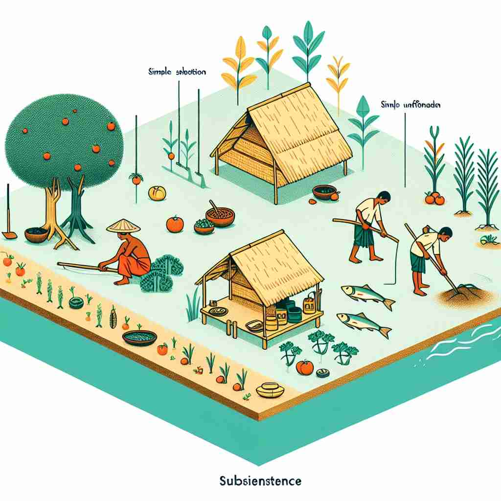
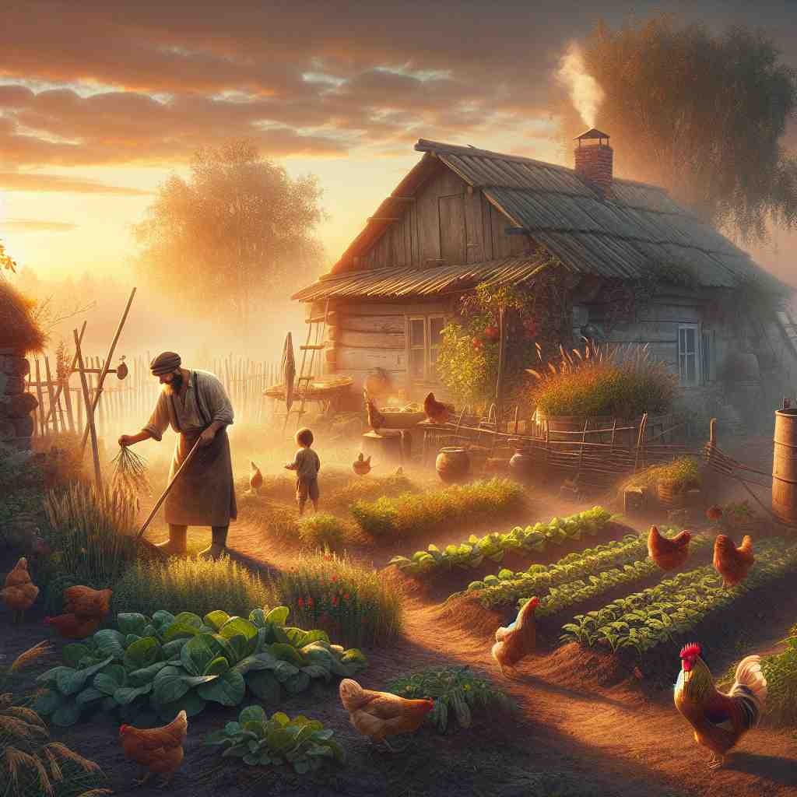
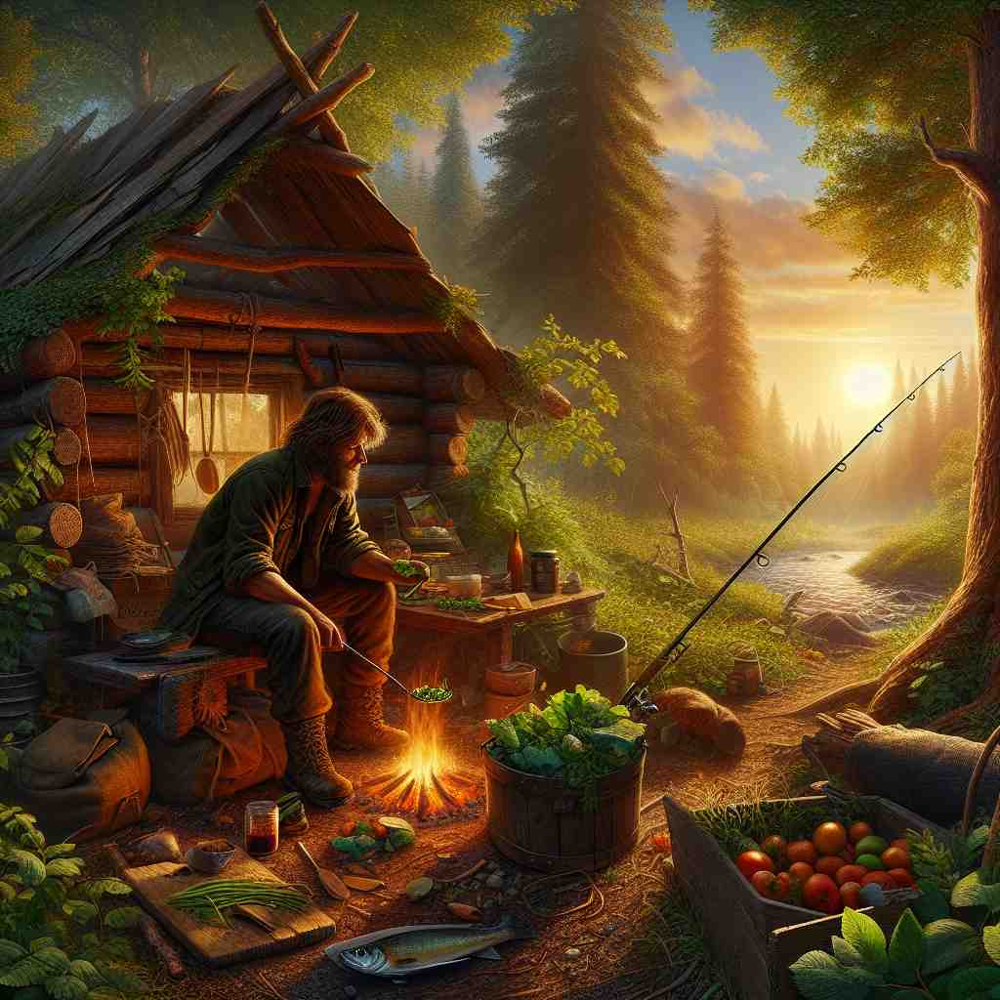

🗝️ n. the state of having just enough food or money to stay alive
🖼️ 想象一个偏远农村地区的日常生活场景。一位老农民在夕阳下收割庄稼，他的家人正在田边帮忙，并希望今年的收成能提供足够的粮食和收入，让他们维持生计到下一季。这就是'subsistence'所描绘的：拥有仅仅足以维持生存的食物或金钱状态。
🔍 想象'subsistence'是一条生存线，恰好在这条线上维持生命。从这个核心概念出发，可以理解为维持生存的行为、支持生存的手段，以及自给自足的状态。所有这些含义都围绕着'勉强维持生存'这个中心思想展开，帮助你更好地记忆和理解这个词。

💬 In this village, people practice subsistence farming to support their daily needs.

💬 They practice subsistence farming to grow enough food for their family.

💬 They practice subsistence farming to support their family.

💬 The man is leading a subsistence lifestyle by catching fish and growing vegetables.
🔗 1. assist: 帮助 2. insist: 坚持 3. persist: 坚持不懈
💡 可以将 "subsistence" 理解为 "在生活中站立"，即维持基本的生活状态。通过联想 "sub" 和 "stand"（虽然不完全相同但音似）来帮助记忆，强调基本的生存需求。